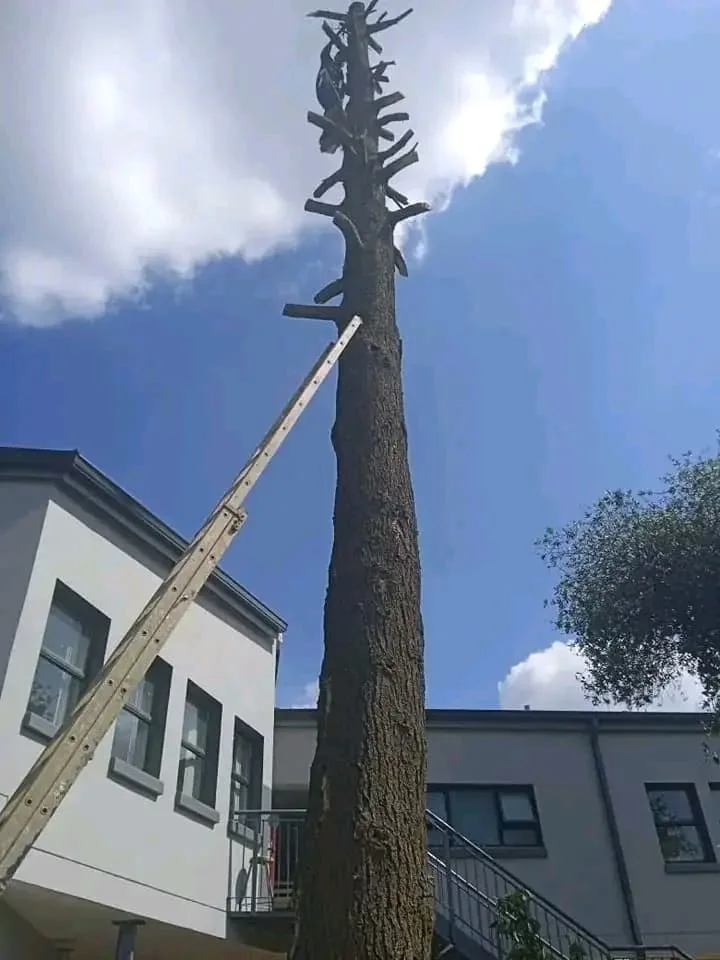
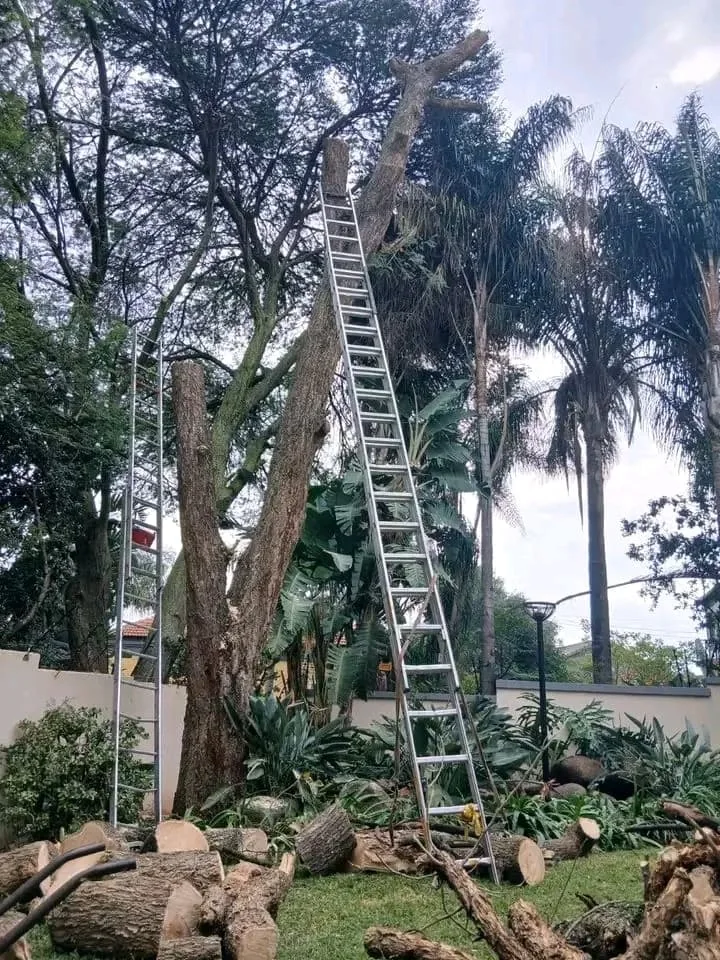
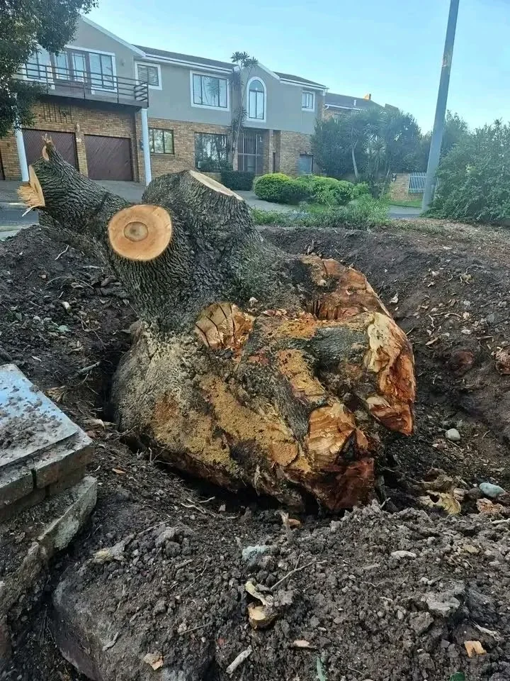

01
Tree cutting & felling
Controlled cutting and removal of unwanted or problematic trees.
Professional tree & garden care
From careful pruning to complete tree removal, we help you reclaim a safer, cleaner outdoor space.

Centurion • South Africa
One call.
A cleaner space.
What we do
Whether a tree has outgrown its space or your garden needs a fresh start, we have the service to get it sorted.
Controlled cutting and removal of unwanted or problematic trees.
Neat, practical trimming to manage growth and tidy your trees.
Remove old fronds and keep your palms looking well maintained.
Professional cutting and removal for palms of all sizes.
Clear leftover stumps and roots to make your space usable again.
Deal with branches encroaching on roofs, walls and neighbouring spaces.
Reduce excessive height and manage trees that have grown too large.
Shape overgrown trees for a cleaner, more balanced appearance.
Carefully move suitable trees to a better position on your property.
Clear trees and vegetation to prepare residential or work sites.
Get overgrown outdoor spaces back into shape with a thorough clean-up.
Remove branches, cuttings and garden refuse after the work is done.


Why Greenbush
Tree work can feel like a big problem. Our job is to make it simple—from the first call to the final clean-up.
Fully safety files and a safety-first approach to every job.
Cutting, uprooting, clearing and refuse removal—all from one team.
Call or WhatsApp directly to discuss your trees and arrange a quote.
Our recent work
A look at some of the trees, palms, stumps and sites our team has tackled.
Let’s get it sorted
Tell us what you need. Your enquiry will open in WhatsApp, ready to send directly to our team.
Call or WhatsApp 074 754 5666, or complete the quick quote form above. Photos and your location help us understand the job.
Yes. Garden refuse removal is one of our services. Mention it in your enquiry so we can include it when discussing your job.
We handle tree cutting, branch removal and tree topping. Send us photos of the tree and surrounding area so we can assess the work with you.
We are based at 49 Panorama Road, Centurion. Contact us to confirm availability for your location.